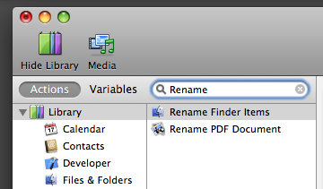

Tutorial 02: Finding Actions
The next step is to locate the actions needed to re-name the identified files and add them to the workflow. To find the appropriate actions quickly, use Automator's built-in search to locate actions by entering a name, keyword, category, or phrase into the Search field.
To begin the search, select the Applications library folder in the Library list view and type Command-Option-F to activate the Search field in the window toolbar. With the Applications group selected, the search will cover all installed actions. Note: to search a particular application library (like the Finder or iTunes libraries), select it first in the Library list view and then enter the search terms in the Search field.
With the search field active, type the word "rename" and instantly all the installed actions related to naming items will be displayed in the Actions list view. Hit the Return key and the first item in the list of found actions will be selected. Using the up and down arrow keys, navigate the Action list until the Rename Finder Items action is selected.

(For an alternative method of adding Finder items to a workflow, see TIP #1 in the sidebar)